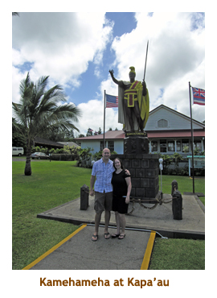
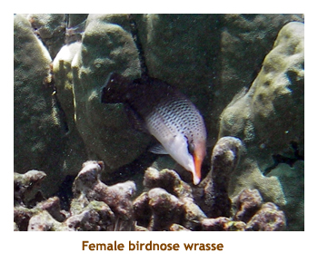
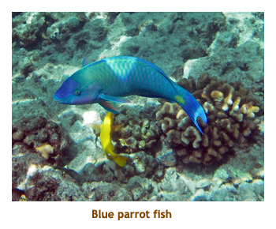
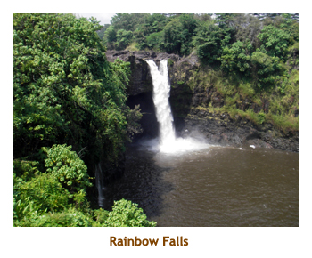

[ Home ] [ Travel ] [ Photography ] [ Pets ] [ Games] [ Rowing] [ Physics ]


Two Weeks on the Big Island
Calgary - Kona, Hawai'i - Hilo, Hawai'i - CalgaryTravel
Cruises
Past Cruises (Diaries)
Future Cruises
Rogues Galleries
Land Trips
Diaries (Land Trips)
Hawai'i - Big Island - 04'01
Hawai'i - Maui - 05'02
Hawai'i - Big Island - 04'03
Hawai'i - Kaua'i - 09'04
Hawai'i - Big Island - 04'06
Hawai'i - Maui - 04'06
Mainland China - 05'07
Phoenix, Arizona - 12'07
Greek Isles - 05'08
Hawai'i - Kaua'i - 09'08
Hawai'i - Big Island - 09'09
Hawai'i - Maui - 05'12
Hawai'i - Big Island - 04'13
Ireland - 08'13
Mexico - Cancun 11'13
France/Belgium/Lux 07'15
Hawai'i - Big Island - 05'17
England / Wales - 06'17
Hawai'i - Big Island - 09'19
Photography
Cameras
Underwater
Pets
Tara
Blackie
Whitey
Muffy
Ollie
Rusty
Fluffy
Rufus&Dufus
Games
Rowing
Physics
Once again it was time to head for Hawai'i. As usual, Marjorie had no holidays so this was to be another trip with the kids. Mike and Stacy could get 2 weeks off, while Matt and Chrissy could only get one week. We voted on time and place, picking the end of Sept and early Oct to visit Kona and Hilo on the Big Island. I set about booking accomodations and car rental. Although tourism was way down because of the economy, for some reason one of the weeks was heavily booked (and very expensive). Unbeknownst to me was that fact that we would be overlapping with the week of Ironman! Due to the kids schedules (and an upcoming cruise for Marj and I), we were unable to reschedule away from Ironman week. Oh well, it was only money!
I really lucked out on accomodations. I was able to get a 3br/3ba condo unit in Kona
and a 3br/3ba house in Pahoa (near Hilo). The Kona condo was especially nice because
it had air conditioning in each room, and 2 nice swimming pools in the complex. The
Hilo house was right across the road from the "tidepools" snorkelling site. The house
rental agency also had special deals on car rentals, so I was able to book through
them for much less than I could get on the Web.
 |
Day 1 (Sept 26) - Flight to Kona

For the first week it would be Mike, Stacy and me. We had an early flight out of Calgary, so Mike and Stacy overnighted at our place. Marj dropped us off at the airport. Our flight took us through Seattle and then to Kona. We arrived in Kona about noon. Our rental car was ready - a mid-size car (can't remember what it was). The north end of Kailua had been recently developed with new shopping malls. We stopped at a strip mall and grabbed some lunch from Subway and Taco del Mar. We picked up the keys for the condo from the Sunquest building. We drove to our gated condo complex at the south end of Ali'i Drive, and found our unit. After we moved our stuff in and picked our bedrooms, I tried to get the air conditioning working. No luck. So, I phoned the rental people and reported the problem. The temperature in the unit was in the 90's, it was going to be a warm night!
For our first snorkel we buzzed down the road to Kahalu'u Beach Park. It
was strange being here again as Marjorie and I had visited this beach
a year ago on our SF to Australia cruise. This
site is always good and we had a nice time. Saw lots of fish and a turtle. For
dinner we went to the Fish Hopper restaurant. It was very good. We ordered from an
earlybird menu and the meals were about 1/2 price. We had brought a number
of games with us and played St. Petersburg for the evening. We retired for
a warm night as the A/C was still off.
Day 2 (Sept 27) - Snorkelling at Honaunau
This morning I was up early (Calgary time!) and it was still dark. I had my breakfast out on the patio as the sun rose. There was a bag of birdseed there so I filled up the feeder and watched the finches and doves sate themselves. This was to become a morning ritual for me. The 16th fairway of a golf course ran behind the condo, so this was my view from the patio. Gorgeous! When the others arose, we headed down to Pu'uhonau o Honaunau for a morning snorkel. There is no beach there at all, you just hike over black lava and climb into the water. The snorkelling was great. We came back to the condo for lunch. The mechanical guy showed up and fixed our air conditioning. It turns out that there was an unmarked (and hidden) switch that activates all of the A/C units. This is so that they can rent the condo "without air" for a cheaper price. I really wanted air so had paid a bit more for the rental.
We decided to try out the main swimming pool. We had to walk across the
complex (30 buildings!) to the far corner. The pool was great. For dinner we
drove to Honalo to our favorite Japanese food restaurant - Teshima's. Mrs.
Teshima was still going strong there at 95+ years old. After dinner we
returned to the condo and played Puerto Rico.
Day 3 (Sept 28) - Snorkelling at Kauno'oa
 Today we decided to do the north end of the island. We headed up the lava covered Kohala Coast to Kauno'oa Beach. Along the way we encountered a few Ironman bikers and there were signs along the road to watch out for athletes. We turned off the road at the Mauna Kea Hotel and got one of the few public beach parking passes from the guard house. The water was calm and the snorkelling was excellent. After our swim, we continued north and around the tip of the Kohala Peninsula to the King Kamehameha I statue at Kapa'au. We didn't go right to the end of the road as we had been there before. We drove back along the mountain ridge road (Hwy 250) and into Waimea (Kamuela). We had a very nice lunch at Merriman's.
On the way back to Kailua we stopped in at the King's Shops at the Mauna Lani
so that the kids could shop. Then it was back to the condo for a swim in the pool.
Monday's was tapas at the pool, so the kids had some finger food.
We had dinner at the condo and then played Amun-Re. Another perfect day!
Oh yes, and the A/C was working perfectly as well!
Day 4 (Sept 29) - Snorkelling at Pauoa Bay
After having breakfast and feeding the birds, I turned on the news to see what was happening in the world. There had been a huge earthquake in Malaysia, and Hawai'i was under a tsunami watch. If a tsunami had been created (and they didn't know yet), it would hit Hawai'i at 1:10 PM. The news people said to listen to the TV or radio throughout the morning for updates. So, assuming this was not to be worried about, we headed off up the Kohala Coast to Pauoa Bay at the Fairmont Orchid. We parked at the small lot for Holoholokai Beach and then walked about 1/2 km past the Fairmont Orchid to Pauoa Bay. The water was a bit murky and the snorkelling was just OK. When we got out of the water, the beach attendant told us that the tsunami watch was over. We walked through the hotel grounds to the hot tub and soaked for a while. When we got back to the parking lot, there was a note on our windshield saying that they had locked the lot because of the tsunami threat. Sure enough, the gate was locked and we couldn't get out. I had to walk over to the hotel to phone for the security people to let us out.
We returned to the condo and changed, then headed into Kailua for lunch
at Splashers (burger joint). The Rhapsody of the Seas was in port and several
passengers were eating at Splashers. We did some grocery shopping at
Safeway and then returned to the condo for a swim. We tried the smaller
pool near our unit. It was very nice. Then it was home for dinner and an evening
of Catan. We played an interesting board, so left it set up to play again
the next day.
Day 5 (Sept 30) - Back to Kahalu'u Beach Park
After sunrise this morning as I was feeding the birds, the watering guy drove up the fairway. Every second day he would come by in his jeep, attach the sprinkler heads and then return later to remove them before the first golfers came through. He would always wave to me. No one else up at this time I guess. We didn't go too far today. We decided to do Kahalu'u B.P. again, just a few minutes down the road. As usual it was great. In the distance we spotted the Pride of America cruise ship at anchor. We popped back to the condo to change and have lunch.
After lunch we drove a few minutes south to Keauhou Bay where we
booked the Fairwinds II catamaran for a trip to Kealakekua Bay the next day.
I had done the trip twice before (Mike once) and we were really looking forward to it.
We returned to the condo for a game of Catan (same board as last night)
and then a swim in the pool. We picked up dinner nearby at the L&L
Hawai'ian BBQ fast food place in the Keahou Shopping Center. It was good.
Then we played Carcassonne for the evening.
Day 6 (Oct 1) - Sailing to Kealakekua Bay
Today was our catamaran trip to Kealakekua Bay for snorkelling. We had to be at the dock in Keauhou Bay by 9:00 AM. The Fairwind II company no longer does the door prize, so we didn't win another bag of Kona coffee (like last time). The trip down the coast was sunny and smooth. Unlike the last two times when we sat on the top deck and got burnt to a crisp, we sat below in the sheltered cabin. Much smarter! The snorkelling at the site was awesome. There had been a land slide along the cliff about a year ago, so part of the snorkelling area was cordoned off. This was the area that had the best snorkelling before. However, the areas we could do were great. Didn't see many Achilles Tangs this time. I think they were mainly in the cordoned off area. After the snorkel we had burgers and drinks onboard, with people using the water slides and diving off the boat for some more fun. The trip back to Keauhou was cloudy.
We just had a lazy afternoon back at the condo. We went into Kailua for
dinner at Bubba Gumps. Had a great meal there! The kids answered all
of the Forest Gump questions - I only knew the answers to a couple of them.
Back at the condo we played Tigris and Euphrates for the evening.
Day 7 (Oct 2) - Snorkelling at Hapuna Beach
Got up early, had breakfast on the patio, watched the sunrise, fed the birds and waved to the sprinkler guy. Boring! (But better than a good day in Calgary). Stacy wasn't feeling up to snorkeling today, so Mike and I headed up the Kohala Coast to Hapuna Beach. It is a huge beach of lovely white sand. I know a lot of people complain that there are no white sand beaches on the Big Island. They must have skipped the Kohala Coast. The snorkelling was very good there. On the way back we saw the Sun Princess at anchor in Kailua. That's the sister ship to the Dawn Princess that Marjorie and I did the previous year. I took a photo of the ship from the Wal-Mart parking lot, exactly where I had taken the same photo of the Dawn Princess last year.
In the afternoon we played Catan. Once again we enjoyed the board
so left it setup for the evening. Then we did the swimming pool
followed by dinner at Bongo Ben's in Kailua. On the way to dinner,
we stopped at Casa De Emdeko (where we had stayed twice before)
to watch the sunset. Back at the condo we
replayed the Catan board for the evening.
Day 8 (Oct 3) - Return to Honaunau
Today was our final day of peace and quiet before Chrissy and Matt arrived. This morning a red cardinal visited with the other birds. That's the first one I had seen this trip. Then it was time for our daily snorkel. C&M prefer swimming to snorkelling, so we had planned to do the "poor swimming but great snorkelling" beaches (or non-beaches) during the first week. Hence we decided to repeat our trip to the Honaunau lava site. Once again the snorkelling was very good. Parking is a bit of a squeeze, but if you get there early, you can usually find a spot. After our snorkel, we took the one lane coastal route to Napo'opo'o, a little village just south of Kealakekua Bay. We could see the Captain Cook monument across the bay and the area where we had snorkelled from the catamaran. Then it was back to the condo for lunch.
Again, we had a lazy afternoon, with a swim in the pool. For dinner we
drove to Honalo and repeated at Teshima's. It's always good there!
After dinner we drove north to the airport to turn in our car and pick up M&C.
We traded the car for a 7 passenger minivan and then waited at the
carousel for the 10:00 PM flight to arrive. C&M arrived safe and sound
and we transported them back to the condo.
|  |  |
Day 9 (Oct 4) - Return to Hapuna Beach
As I was going about my morning ritual, I was surprised when M&C got up relatively early. We did a walk around the condo complex. Nice in the early morning! When the others awoke we headed up the Kohala Coast to Anaeho'omalu Beach by the Mauna Lani Hotel. It is a beautiful beach with a large fresh water lagoon. However, this was our fourth time here over the years and once again the snorkelling was crappy - far too murky to see anything. We'll have to give up on this beach. So, we bundled up our things and headed further north to Hapuna Beach. Stacy had missed this beach last week, so Mike and I were happy to repeat this beautiful beach. The snorkelling was very good. M&C had a swim while the rest of us snorkelled.
On the way home we stopped at Splashers for lunch. The kids really like
that place! In the bay, Carnival Spirit was anchored. We returned to the
condo for the afternoon and had a good read. Then we did the swimming pool
and watched the sunset from the pool. We had dinner at home and finished the
evening with a couple of games of Ticket to ride.
Day 10 (Oct 5) - Magic Sands and Kahalu'u Beach Park
This morning we decided to try Magic Sands Beach. I had never stopped there before, even though we had passed it dozens of times over the years. It was very wavey and there were lots of people with surf boards. We watched for a bit and then decided to move down the road to Kahalu'u Beach Park. The regular beach at K.B.P. is rocky and only good for snorkelling. However, there is a second beach a short walk to the north that is sandy. We went in snorkeling from this beach. It was very good. We went back to the condo to change and then hit the Kona Brewing Company (in Kailua) for an 11:00 AM tour. There was just one other couple there, so we were a small tour group. After touring the facility, we sat in the outdoor restaurant area to taste some of their beers. Afterwards we stayed on for a pizza lunch. Very nice!
We returned to the condo and played some Ticket to Ride. We had a swim in
the pool and then got ready for the luau dinner that Chrissy had booked for us.
Being Monday, there were tapas at the pool, but our luau date was for 4:30, so
we were too early to partake. Just as well - who needs two dinners?
The luau was at the Sheraton
Keauhau Bay just down the road. Marjorie and I had
stayed there years ago when it was the Kona Surf Hotel. The luau was
wonderful - good food, free drinks, and a great stage show. After the show
was finished, we drove back to the condo and played some Catan. A great day!
Day 11 (Oct 6) - Pauoa Bay and Mauna Kea
Note: This morning I could not find my camera bag (with my two cameras in it). I could only think that I had left it at the Kona Brewing Co. I phoned them to look out for it. Whah! Fortunately I still had my underwater camera.
Today was going to be a long day. Our plan was to head up the Kohala Coast for a snorkel and then continue on over the saddle road and up Mauna Kea for the sunset. We thought that M&C would find Pauoa Bay nice for swimming, so that's where we headed first. Once again the snorkelling was poor as the water was very murky. There were lots of turtles there, so that made up for it. After our snorkel we tried to go to the hot tub, but it was closed. So, we spent an hour or so swimming in the hotel pool. May as well use the facilities! We showered and changed at the Holoholokai Beach parking lot. This time we were not locked into the parking lot! While we were there, we stopped at the King's Shops so the kids could do some shopping. There was a second Merriman's restaurant there, with a different menu than the place in Waimea. It was good, but I think I preferred the other location.
We set off across the saddle road and up Mauna Kea. At about 9,000 ft we
stopped at the visitor's center for a while. There is a good museum there. Then
we continued up the road to the summit at 13,000 ft.
There are thirteen telescopes sprinkled
over the mountain top. We bundled up and stood outside to watch the sunset.
It was cold! We headed back down in the dark and retraced our way back to
the coast. We stopped again at the King's Shops (oh, those kids!) and then
continued back to our condo. Had a bite to eat and then played some Catan.
An excellent day!
Day 12 (Oct 7) - Overland to Hilo (Pahoa)
Today we had to say goodbye to Kona and travel around the island to Pahoa (near Hilo). This was to be our base for exploring the eastern side of the island. After breakfast we packed our belongings into the van and headed south. Just past Captain Cook we stopped at the MacNut Farms orchard where Marjorie and I had visited in 2001. Then we drove down the hillside to Ho'ohena Beach looking for dolphins. We didn't see any, just some guys spear fishing. So we drove back up to the highway. At Na'alehu we stopped at the Punalu'u Bakery for a snack. That's the place that makes the coloured sweet rolls. A little further along we stopped at Black Sand Beach (also called Punalu'u) and saw a number of turtles on the shore and in the water.
We arrived in Pahoa by 1:00 PM and stopped at Luquins for lunch. What
a quaint little town! Then we drove a little further to locate our new
residence by the tide pools. We unloaded our stuff and then did a quick
snorkel before dark. Note: I called Marj (as I did every afternoon)
and she had received a message from our Kona condo that my camera bag
had been found at the pool and turned in to security. That's when I remembered
taking the camera for a photo of the pool. We played some sticks and
then the kids headed into town for dinner. I was still full from lunch
so didn't go with them.
Day 13 (Oct 8) - A Day at the Volcano
Today was cloudy with a chance of rain. For all those sunny days that we had been blessed with in Kona, it had rained heavily each day in Hilo. We were hoping that we brought the good weather with us. It was time to visit the volcano. Heading to the main highway, we saw a small farmer's market and stopped in. They had some produce and fruits as well as handicrafts. We also found a shave ice stand and each had a snow cone.Yummy! Then we continued to the volcano park. Things had changed since Mike and I were there last. About a year ago an active vent had opened up in the main Kilauea crater sending a plume of smoke and gases up and southward. As a result, part of the encircling road had been closed. You could only now drive a "C" shape of the road. We did the Jagger Museum and the Thurston lava tubes. We took a break and had lunch at the Lava Rock Cafe.
It poured in rain as we had lunch. After lunch, the rain stopped and we
drove down the Chain of Craters Road to the end of the road. In the
distance we could see the smoke plume where the lava was pouring into the
sea. We also did the hike to Pu'u Loa to see the petroglyphs. From the
park headquarters we found that the best viewing was from the Kalapani
end of the road, not far from our Pahoa rental. So, we went back home for a
bit and then headed to Kalapani as darkness came. However, when we got
there the site was closed "due to an emergency" that we never did find out
about. We drove back through Hilo and stopped at Pescatores for dinner
at about 8:00 PM. We'd have to try the viewing site again tomorrow.
Day 14 (Oct 9) - Jungle and Waterfalls
This morning I discovered 2 bicycles in a storage room. I was missing my birdfeeding routine, so I hopped on the bike and went for a spin around the subdivision. It was great. When I got back to the house, Matt was up, so we both went for a spin. Then it was time to get the others and head off for the day. We stopped first at the Mauna Loa Nut factory. They had a large gift shop and an interesting self guided tour of the factory. The orchard is enormous - row after row of macadamia nut trees. Then we toured the town of Hilo, pointing out the Dolphin Bay Motel where we had stayed twice before. Then we did the waterfall tour - Rainbow Falls, the Boiling Pots, Pe'epe'e Falls, Akaka Falls and Hakuna Falls. We stopped in the little town of Hakalau for pizza at Liz's.
After lunch we headed back to Hilo and had an ice cream. Then it
was back to the house for a swim in the tide pools. Towards dusk we
once again headed to Kalapani and the volcano viewing site. This
time it was open and we hiked 1/2 mile or so to the viewing area.
From there we could see the lava pouring into the ocean and the huge
plume of steam, smoke and gases billowing upward. It was awesome.
As the darkness came the cloud glowed redder and redder.
Absolutely amazing! Walking back over the lava we used our
LED headlamps.
They sure came in handy. We drove back through Pahoa and picked up
asian food on the way. Back at home we had dinner and then played
some Catan.
|  |
Day 15 (Oct 10) - Time to Go Home
Today was our final day. We packed up our bags, loaded the van and headed out for Kona, this time doing the northern route across the island. Our first stop was at the Hilo ice cream shop for some shave ice. It was closed! Oh no! As we headed up the east coast, we detoured off the highway to a vanilla bean farm. The girls bought some vanilla pods so that they could make some homemade flavouring. Then we continued on to Waimea. We were planning on stopping at Merriman's for lunch. It was closed! This wasn't our day! We instead had lunch at Huli Sue's. Just on the edge of town we saw the Tropical Dreams farm where our favorite ice cream from Kaua'i was made.
Today was the actual day of the Ironman competition, so lots of roads were closed around Kailua. We had to drive down the belt road to our previous condo so that I could pick up my "lost" cameras. We had a number of hours to kill before our evening flight, so decided to see if we could get near to the Ironman finish line. We did, and saw a number of the athletes arrive at the finish. It was a blistering hot afternoon - how can they do that? After standing in the heat for a while we decided to go back to our old condo for a swim. The pool gates weren't locked and the friendly guard waved us through the gate, so we spent an hour or so cooling off in the pool. After our swim we drove back to Honalo and had dinner at Teshima's. Then it was time to work our way through the road closures and back to the airport. Our flights were on time, getting us into Calgary the next morning. It had been a wonderful trip. Now it's time to plan for Maui!